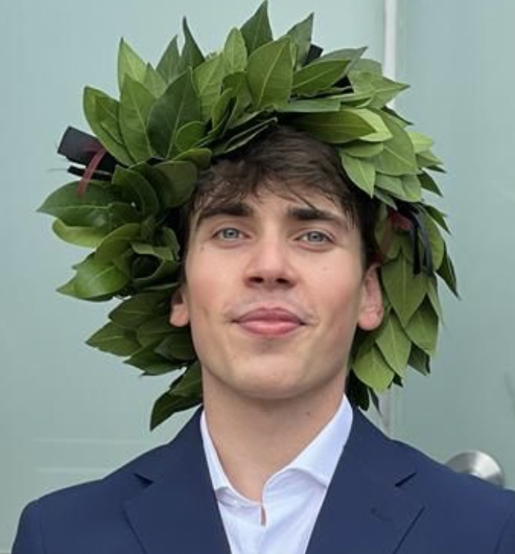
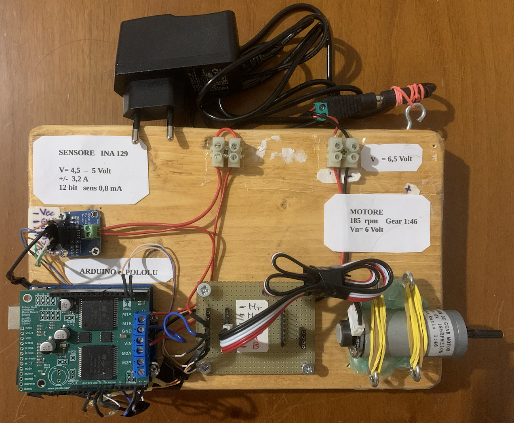
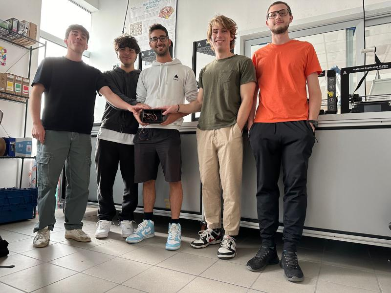

Mechatronics Engineer | Safe Machine Learning | Data-Driven Control | Robotics
Stockholm, Sweden · Trento, Italy
Email: stefanotonini26@gmail.com
LinkedIn: Stefano Tonini
GitHub: Grandediw
I am a Mechatronics Engineer specializing in safe machine learning, data-driven control, industrial automation, and robotics. My work focuses on designing and validating advanced control and machine-learning solutions for real-time systems, with applications in process control, automation, reinforcement learning, and embedded environments.
I have experience across research, R&D engineering, AI software development, and academic projects, combining control theory, simulation, machine learning, and real-world industrial deployment.
September 2025 - Present
January 2025 - September 2025
March 2024 - March 2025
September 2024 - February 2025
November 2022 - June 2024
Master’s Degree in Mechatronics Engineering — Electronics and Robotics Specialisation
August 2024 - September 2025
Relevant courses: Model Predictive Control, Artificial Intelligence, Scalable Machine Learning, Deep Learning.
Summer School: Digital Platform for Smart Cities
August 2024
Master’s Degree in Mechatronics Engineering — Electronics and Robotics Specialisation
September 2023 - July 2024
Relevant courses: Machine Learning, Robotics Perception and Action, Modeling and Simulation of Mechatronic Systems.
Bachelor’s Degree in Industrial Engineering — Systems Specialisation
September 2020 - September 2023
Accepted for presentation at the 23rd IFAC World Congress, Busan, Korea — August 2026.
October 2024 - August 2024
May 2024 - August 2024
May 2024 - July 2024
May 2023 - September 2023

May 2022 - September 2022
